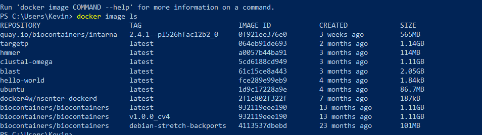

Bioinformatic tools in docker container using BioFSharp.BioTools
BioFSharp.BioTools is an experimental f# wrapper for Docker.DotNet that I and members of my group are working on. In a nutshell, it starts a docker image and keeps it running, and therefore accessible for I/O. All that is needed is the name of the image. this is acessible for example in the docker cli:

1:
|
|
1: 2: |
|
this is the standard pipe used for the docker engine
1:
|
|
initializing ta BcContext keeps the target container running and accessible for I/O. Aditionally, a folder from your harddrive can be mounted into the container
1: 2: 3: |
|
Modelling the arguments of the process in the container
I modelled the IntaRNA parameters the same way I did with other tools in BioFSharp.BioTools: nested union cases.
Because i wanted to mount a folder into the container for I/O operations, those types need two functions that either create the
argument string directly or shape the mounted path in a way that it is interpretable by the unix based system in the container. These functions are called
make/makeCmd and makeWith/makeCmdWith , the second set of functions getting a MountInfo parameter to ensure path safety.
Here is an example of a set of parameters from the IntaRNA BioContainer API:
1: 2: 3: 4: 5: 6: 7: 8: 9: 10: 11: 12: 13: 14: 15: 16: 17: |
|
Running the Container from F# interactive
The following function uses the makeCmdWith functions of the IntaRNAParams type to create a List of correctly formatted command line argument strings.
The BioContainer.execReturnAsync function passes these arguments to the running container and returns the stdOut of the container when it has finished the comptation.
1: 2: 3: 4: 5: 6: 7: 8: 9: 10: 11: 12: 13: 14: |
|
static member CommandLine : string
static member CurrentDirectory : string with get, set
static member CurrentManagedThreadId : int
static member Exit : exitCode:int -> unit
static member ExitCode : int with get, set
static member ExpandEnvironmentVariables : name:string -> string
static member FailFast : message:string -> unit + 1 overload
static member GetCommandLineArgs : unit -> string[]
static member GetEnvironmentVariable : variable:string -> string + 1 overload
static member GetEnvironmentVariables : unit -> IDictionary + 1 overload
...
nested type SpecialFolder
nested type SpecialFolderOption
Environment.SetEnvironmentVariable(variable: string, value: string, target: EnvironmentVariableTarget) : unit
Environment.GetEnvironmentVariable(variable: string, target: EnvironmentVariableTarget) : string
from Microsoft.FSharp.Collections
static val DirectorySeparatorChar : char
static val AltDirectorySeparatorChar : char
static val VolumeSeparatorChar : char
static val InvalidPathChars : char[]
static val PathSeparator : char
static member ChangeExtension : path:string * extension:string -> string
static member Combine : [<ParamArray>] paths:string[] -> string + 3 overloads
static member GetDirectoryName : path:string -> string
static member GetExtension : path:string -> string
static member GetFileName : path:string -> string
...
Path.Combine(path1: string, path2: string) : string
Path.Combine(path1: string, path2: string, path3: string) : string
Path.Combine(path1: string, path2: string, path3: string, path4: string) : string
module Docker
from BioFSharp.BioTools
--------------------
namespace Docker
from BioFSharp.BioTools
type Async =
static member AsBeginEnd : computation:('Arg -> Async<'T>) -> ('Arg * AsyncCallback * obj -> IAsyncResult) * (IAsyncResult -> 'T) * (IAsyncResult -> unit)
static member AwaitEvent : event:IEvent<'Del,'T> * ?cancelAction:(unit -> unit) -> Async<'T> (requires delegate and 'Del :> Delegate)
static member AwaitIAsyncResult : iar:IAsyncResult * ?millisecondsTimeout:int -> Async<bool>
static member AwaitTask : task:Task -> Async<unit>
static member AwaitTask : task:Task<'T> -> Async<'T>
static member AwaitWaitHandle : waitHandle:WaitHandle * ?millisecondsTimeout:int -> Async<bool>
static member CancelDefaultToken : unit -> unit
static member Catch : computation:Async<'T> -> Async<Choice<'T,exn>>
static member Choice : computations:seq<Async<'T option>> -> Async<'T option>
static member FromBeginEnd : beginAction:(AsyncCallback * obj -> IAsyncResult) * endAction:(IAsyncResult -> 'T) * ?cancelAction:(unit -> unit) -> Async<'T>
...
--------------------
type Async<'T> =
RNA sequence string
val string : value:'T -> string
--------------------
type string = String
union case QueryInputOptions.File: string -> QueryInputOptions
stream/file name from where to read the query sequences
--------------------
type File =
static member AppendAllLines : path:string * contents:IEnumerable<string> -> unit + 1 overload
static member AppendAllText : path:string * contents:string -> unit + 1 overload
static member AppendText : path:string -> StreamWriter
static member Copy : sourceFileName:string * destFileName:string -> unit + 1 overload
static member Create : path:string -> FileStream + 3 overloads
static member CreateText : path:string -> StreamWriter
static member Decrypt : path:string -> unit
static member Delete : path:string -> unit
static member Encrypt : path:string -> unit
static member Exists : path:string -> bool
...
| NoMount
| HostDir of string
override ToString : unit -> string
static member containerPathOf : m:MountInfo -> filePath:string -> string
static member getContainerPath : hd:MountInfo -> string
static member getHostDir : hd:MountInfo -> string
from AppliedFSharp
from AppliedFSharp.ContainerAPIs
{Id: Guid;
Connection: DockerClient;
ImageName: string;
ContainerId: string;
Mount: MountInfo;}
| Query of QueryOptions list
| Target of TargetOptions list
| PredictionMode of PredictionModeOptions list
| Seed of SeedOptions list
| OutputMode of OutputModeOptions
static member makeCmd : (IntaRNAParams -> string list)
static member makeCmdWith : m:MountInfo -> (IntaRNAParams -> string list)
module List
from Microsoft.FSharp.Collections
--------------------
type List<'T> =
| ( [] )
| ( :: ) of Head: 'T * Tail: 'T list
interface IReadOnlyList<'T>
interface IReadOnlyCollection<'T>
interface IEnumerable
interface IEnumerable<'T>
member GetSlice : startIndex:int option * endIndex:int option -> 'T list
member Head : 'T
member IsEmpty : bool
member Item : index:int -> 'T with get
member Length : int
member Tail : 'T list
...
type String =
new : value:char -> string + 7 overloads
member Chars : int -> char
member Clone : unit -> obj
member CompareTo : value:obj -> int + 1 overload
member Contains : value:string -> bool
member CopyTo : sourceIndex:int * destination:char[] * destinationIndex:int * count:int -> unit
member EndsWith : value:string -> bool + 2 overloads
member Equals : obj:obj -> bool + 2 overloads
member GetEnumerator : unit -> CharEnumerator
member GetHashCode : unit -> int
...
--------------------
String(value: nativeptr<char>) : String
String(value: nativeptr<sbyte>) : String
String(value: char []) : String
String(c: char, count: int) : String
String(value: nativeptr<char>, startIndex: int, length: int) : String
String(value: nativeptr<sbyte>, startIndex: int, length: int) : String
String(value: char [], startIndex: int, length: int) : String
String(value: nativeptr<sbyte>, startIndex: int, length: int, enc: Text.Encoding) : String